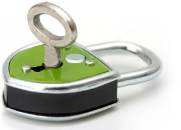

سلام. چند وقتی بود که می خواستم درباره یه سری چیزایی که تو ذهنم میگذره صحبت کنم. ولی راستیتش من اینکاره نیستم و همین الانم دارم فکر می کنم که چی می خواستم بگم! واقعا یادم نمیاد. یه مدتیه که ذهنم بیش از پیش مشغوله و خیلی زود فراموش می کنم شاید تو این سن فراموشی گرفتم!
این نوشته برای خودمه، برای اینکه چند سال بعد بهش نگاه کنم و یادم بیاد اون موقع چی فکر می کردم، چطور نگاه میکردم و… . هر روزی که میگذره یه سری آدم رو می بینم که طرز فکرشون با من متفاوته، شاید در خیلی از مواقع این تفاوت از این سر دنیا تا اون سر دنیا باشه. صحبت من سره تفاوت تو چیزهای جزئی نیست، حرف من سر یه سری (چی بهش میگن!) اصوله. اصولی که می تونه تو زندگی افراد تاثیرگذار باشه. اکثر آدما خیلی زور بزنن فقط می تونن جلو پاشونو ببینن. یه سری هم که کلا نمی بینن! مشکل من با اونایی هست که نگاهاشون جلو پاهاشونه. اینکه این لحظه رو بگذرونن، بعدش که مشکل بعدی پیش اومد یه فکر به حالش می کنن. مساله اینجاست که حرفم گوش نمی کنن. بدتر از همه اینکه فکرم نمی کنن.
یکی از مشکلاتی که جامعه امروز ما داره و خواهد داشت این تلویزیونه. تلویزیونه لعنتی! در این باره ترجیح میدم نگاهی به نظرات دوستم افشین بندازید(تلویزیون سرطان است) هر وقتی که میری مهمونی این ور و اون ور می بینی که یه سری کله هاشون رو کردن تو تلویزیون و دارن به یه مشت فیلم مفت نگاه می کنن.
قبل از اینکه حرفم رو بزنم دوست دارم بگم که از حدود یک سال با یه اتفاق تبدیل به مشتری رادیو جوان شدم و با توجه به شرایط زندگیم که به طور میانگین روزی حداقل دو ساعت رو تو ماشینم، به برنامه های خوب و بد رادیو جوان گوش میدم. به نظرم گوش دادن به رادیو بهتر از شنیدن چندین باره ی یه سری آهنگ تکراریه که از توش هیچی درنمیاد. شاید این نگرش من به زندگی از چند وقت قبل شروع شده، دقیقا نمی دونم کی! ولی به نظرم خیلی خوبه که برای هر چیزی حساب می کنم. نه اینکه فکر کنید منظورم مالی باشه. منظورم اینکه که با شنیدن یه برنامه، دیدن اون، انجام یه عمل یا یه رفتار خاص یک ویژگی مثبت به ویژگی های شما اضافه بشه. در رابطه با تلویزیون هم من آنچنان زمانی برای این رسانه(و همینطور فیس بوک و توئیتر و …) نمی ذارم. علاوه بر ساعات صرف نهار و شام که معمولا مصادف با پخش اخبار هست و یه نگاهی به اخبار دارم، در حال حاضر فقط فیلم کلاه پهلوی رو به دلیل جنبه تاریخی اون رو نگاه می کنم. در مجموع به فیلم های تاریخی خوب علاقمندم. مثلا یه چیزی که تو این هفته برام جالب بود زمانی بود که اون شخصیتی که مغازشو زده بودن با اعتراض داشت میگفت که ما در گذشته در مغازهامونو باز میزاشتیم و میرفتیم مسجد نماز میخوندیم و همهچی امن بود و الان این مشکلات به یه سری دلایلی که میگفت ایجاد شده. این فیلم که مال چند دهه قبله ولی مشکلی که بود هم چنان پابرجاست. مشکل ما از فکر نکردنه. از خیلی ها پرسیدم و میپرسم که با دیدن این سریال های خارجی که چاشنی همشون خیانت به خانواده هست چی یاد میگرین؟ چه فایده ای براتون دارن؟ جواب های جالبی ازشون میشنوم: خب نبینیم چی کار کنیم. آخه قشنگن. زندگی یاد میگریم. شعورمون بالا میره!
قشنگیشون که معلومه بایدم قشنگ باشه که شما رو جذب کرده ولی اگه دیدن این فیلما و یاد گرفتن رفتار بازیگرای اون باعث بالا رفتن شعور و دانش شما میشه من ترجیح میدم بی شعور و بی سواد باشم!
هر چند این تمام حرفم نبود ولی چون این موضوع یادم بود دربارش صحبت کردم. فکر کردن، نگاه به آینده و وسعت دیده که میتونه ما رو از این منجلاب بیرون بکشه. شاید شما بگید که دیگه این طور هم نیست و داری زیادی سیاه میبینی ولی اگه واقع بین باشید، اوضاع از اینی که من گفتم هم بدتره!
فرهنگ سازی؛ واژه ای زیبا.
واقعا تاسف می خورم اول برای خودم و بعد برای مردم این جامعه که باید با زور بهشون حرفی رو ثابت کرد و اون ها رو متقاعد به انجام کاری کرد. تا دلتون بخواد مثال برای انجام کاری توسط ملت ما با زور هست که شاید به خیلی هاشون فکر نکردید. از مصرف بی رویه نان و بنزین بگیر تا تخلفات بی حد و حساب رانندگی که با گرون شدنش (زور کردن)در ابتدا تاثیر گذار بود ولی به مرور باز هم برای مردم عادی میشه. نان خشکی هایی که هر بار با گاری پر در حال جمع کردن نون خشک های مردم بودند. کف پمپ بنزین ها که همیشه پر از بنزین سر ریز شده رو فراموش نمی کنم. تخلفات بیش از حدی که رانندگان ما، با حلب پارههای به ظاهر ماشین خودشون(که ساخت مهندسین بی لیاقت و بی ذوق همین مملکت هست، در حالی که با لیاقتان در سایهاند)، خودشون رو که به جهنم سایرین رو به کام تباهی میکشاندند و همچنان هر روزه قربانی میگیرند. همین الان که داشتم میومدم رادیو جوانی ها در حال مصاحبه گرفتن درباره جمع آوری زباله و تمیز نگه داشتن طبیعت بودند که یکی میگفت: “کی حال داره شیشصد متر آشغالو ور داره تا آشغالی ببره!” برای کی تاسف بخوریم. این واقعیته.
شاید ما برای مردمانی که قبل از ما در این سرزمین با افتخار میزیستند مایه شرم باشیم. هر چند هنوز هم کم نیستند کسانی که با تلاش خودشون جور بقیه رو هم میکشند ولی ما ایرانی هستیم، مردمان سرزمین پارس. مردمانی پرتلاش و با انگیزه، خوش ذوق و ادیب. فکر کنید… چی مارو از عرش به فرش کشونده. بیایم با هم برای خودمون، برای آیندگانمون تلاش کنیم. برای شروع کافیست فقط خودتون رو اصلاح کنید…
شاید این یک ساعتی که در حال نگارش این نوشته بودم تکرار نشه ولی به هر حال خواستم بخش کوچکی از فکرم رو بیان کنم. من برای خودم نوشتم ولی اگه شما هم این متن رو خوندید خوشحال میشم نظرتون رو دربارش بخونم. سربلند باشید.